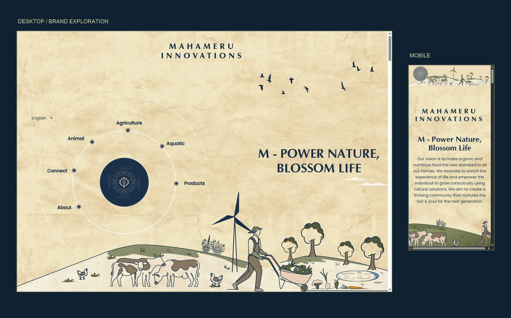
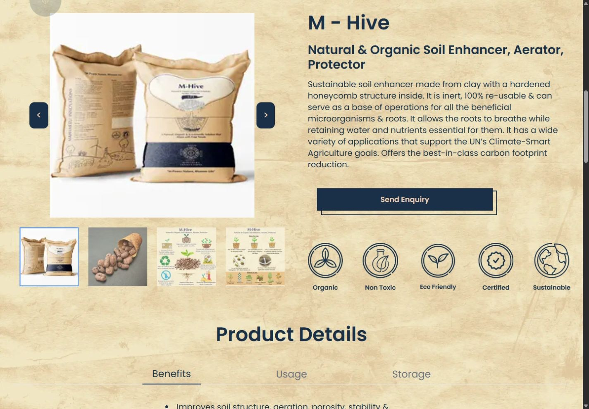
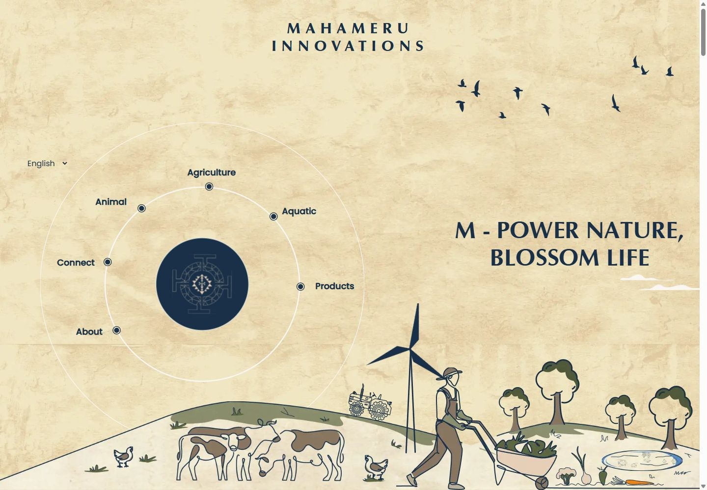
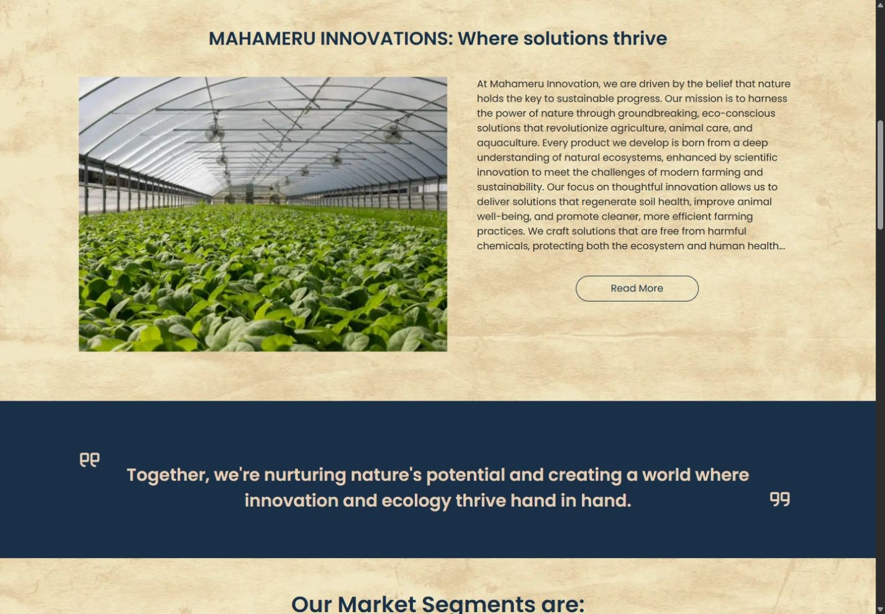
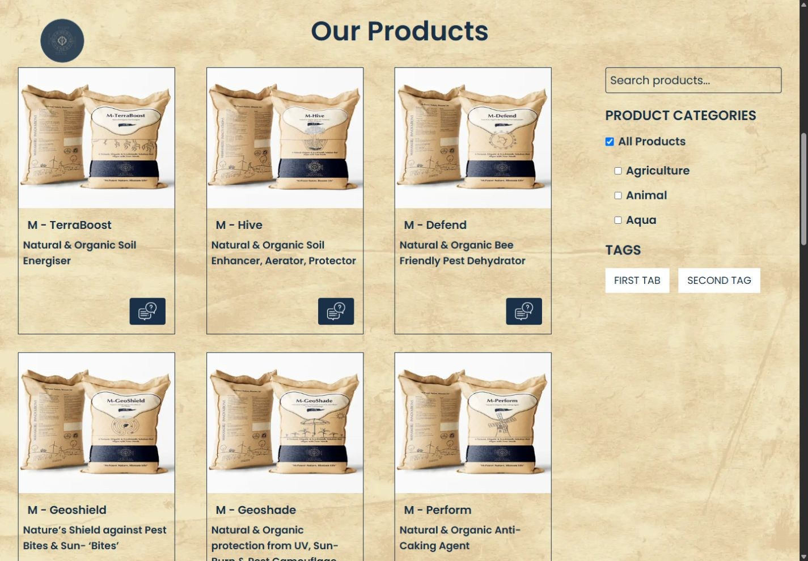
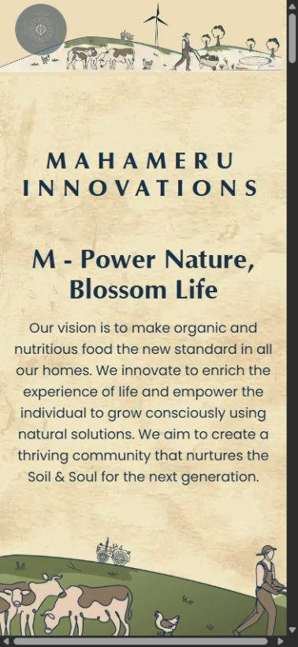
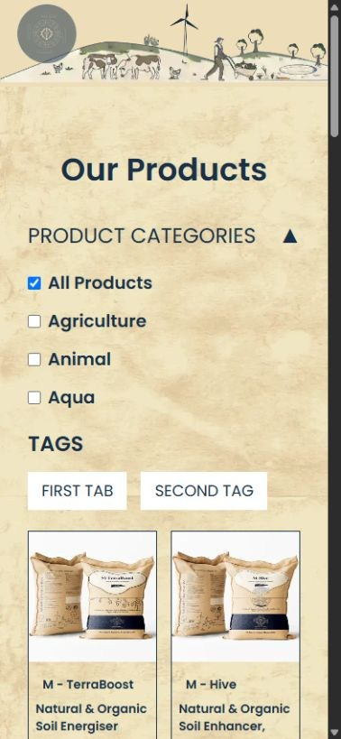

Arrive → Explore → Find a relevant area
The homepage introduces Mahameru through its identity and farming artwork. Navigation connects visitors with About, Agriculture, Animal, Aquatic and Products.
WEBSITE DESIGN / AGRITECH / 2025
Translating an agritech brand’s offline identity into a website where its story, products and applications feel connected.

MY CONTRIBUTIONWebsite design
DESIGN TIMELINETwo weeks
AUDIENCEB2B agritech companies & related clients
01 / THE CHALLENGE
Mahameru already had a recognisable identity in its logo and product packaging. The website needed to translate that identity into a digital experience while making the company’s offering understandable.
The audience included large-scale agritech companies and related clients sourcing organic manure and other organic materials. The design needed to introduce the brand and give that audience a route into product information and enquiries.
02 / THE DIRECTION
I used the existing logo, packaging colours and farming illustrations as the starting points for the website design. The aim was to carry a familiar character across navigation, storytelling and product discovery.
The result connects an expressive homepage with more structured product pages: a place to understand the company, explore its offering and begin a conversation.
03 / THE USER JOURNEY
The homepage introduces Mahameru through its identity and farming artwork. Navigation connects visitors with About, Agriculture, Animal, Aquatic and Products.
The product listing leads to a detail page with product imagery, descriptions and information tabs. Send Enquiry provides the next step for an interested buyer.
This journey describes the visible website controls. It does not represent measured customer behaviour or a tested conversion funnel.
04 / THE VISUAL IDENTITY
Warm cream and deep navy carry through from the existing identity. Supporting olive tones connect the interface to the farming illustrations. The case study uses those same accents in its actions, labels, borders and cards.
Optima gives the brand’s headline its character. Poppins supports interface labels and product information.
Expressive identity. Consistent information.
05 / THE DESIGN DECISIONS
The logo inspired a circular navigation system on desktop. Destinations become part of the brand composition, connecting identity with exploration.
Illustrations of land, people, animals and agricultural activity carry the organic feeling of the brand into the website.
Product imagery and a consistent palette connect the physical offering to its digital presentation. The listing introduces the range; detail pages provide room to explain each product.
Send Enquiry sits alongside product information. The experience supports a conversation with the company rather than presenting a consumer checkout.
06 / THE INTERFACE
The homepage, brand story, product listing and detail page show how the visual direction carries through. Mobile presents the same identity in a vertical layout.



Illustration, typography and product packaging carry the identity into smaller screens. The mobile homepage introduces the brand; product browsing continues the journey.


Screens are captures of the live website, taken in November 2026. They document the current implementation; the linked Figma file provides the design reference.
07 / ITERATION & OUTCOME
The website design took two weeks and followed a design-thinking approach guided by the existing brand. Client feedback led to changes in the UX navigation during the design process.
The outcome is a website design that carries the offline identity into a connected digital experience—from the circular homepage navigation to product exploration and enquiry.
Further evaluation could examine how easily first-time visitors find a relevant product, understand the navigation and identify the enquiry action.
My confirmed role was website design. No usability study, before-and-after performance comparison or measured business impact is claimed here.
08 / EXPLORE THE WORK